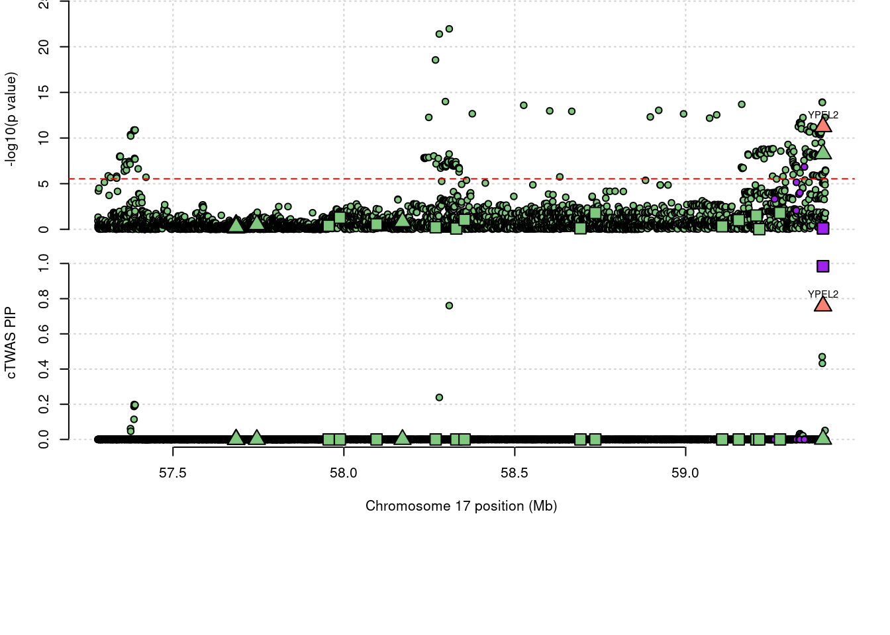
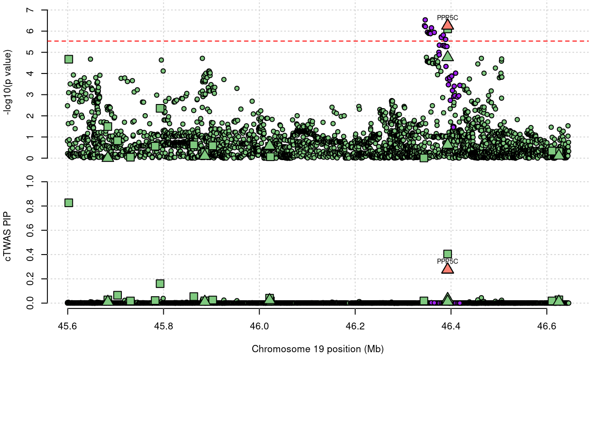

WhiteBlood - WholeBlood Traits Jointly
Sheng Qian
2023-2-1
Last updated: 2023-02-15
Checks: 5 2
Knit directory: cTWAS_analysis/
This reproducible R Markdown analysis was created with workflowr (version 1.7.0). The Checks tab describes the reproducibility checks that were applied when the results were created. The Past versions tab lists the development history.
The R Markdown file has unstaged changes. To know which version of the R Markdown file created these results, you’ll want to first commit it to the Git repo. If you’re still working on the analysis, you can ignore this warning. When you’re finished, you can run wflow_publish to commit the R Markdown file and build the HTML.
Great job! The global environment was empty. Objects defined in the global environment can affect the analysis in your R Markdown file in unknown ways. For reproduciblity it’s best to always run the code in an empty environment.
The command set.seed(20211220) was run prior to running the code in the R Markdown file. Setting a seed ensures that any results that rely on randomness, e.g. subsampling or permutations, are reproducible.
Great job! Recording the operating system, R version, and package versions is critical for reproducibility.
Nice! There were no cached chunks for this analysis, so you can be confident that you successfully produced the results during this run.
Using absolute paths to the files within your workflowr project makes it difficult for you and others to run your code on a different machine. Change the absolute path(s) below to the suggested relative path(s) to make your code more reproducible.
| absolute | relative |
|---|---|
| /project2/xinhe/shengqian/cTWAS/cTWAS_analysis/data/ | data |
| /project2/xinhe/shengqian/cTWAS/cTWAS_analysis/code/ctwas_config_b38.R | code/ctwas_config_b38.R |
| /project2/xinhe/shengqian/cTWAS/cTWAS_analysis/data/mashr_sqtl/sqtl/mashr/mashr_Whole_Blood_Splicing_mapping.RData | data/mashr_sqtl/sqtl/mashr/mashr_Whole_Blood_Splicing_mapping.RData |
| /project2/xinhe/shengqian/cTWAS/cTWAS_analysis/data/mqtl/WholeBlood.db | data/mqtl/WholeBlood.db |
| /project2/xinhe/shengqian/cTWAS/cTWAS_analysis/data/G_list.RData | data/G_list.RData |
| /project2/xinhe/shengqian/cTWAS/cTWAS_analysis/code/locus_plot.R | code/locus_plot.R |
Great! You are using Git for version control. Tracking code development and connecting the code version to the results is critical for reproducibility.
The results in this page were generated with repository version 1c8d70c. See the Past versions tab to see a history of the changes made to the R Markdown and HTML files.
Note that you need to be careful to ensure that all relevant files for the analysis have been committed to Git prior to generating the results (you can use wflow_publish or wflow_git_commit). workflowr only checks the R Markdown file, but you know if there are other scripts or data files that it depends on. Below is the status of the Git repository when the results were generated:
Ignored files:
Ignored: .Rhistory
Ignored: .ipynb_checkpoints/
Untracked files:
Untracked: Proposal plots.R
Untracked: RGS14.pdf
Untracked: RNF186.pdf
Untracked: SCZ_annotation.xlsx
Untracked: SLC8B1.pdf
Untracked: analysis/.ipynb_checkpoints/
Untracked: cache/
Untracked: code/.ipynb_checkpoints/
Untracked: data/.ipynb_checkpoints/
Untracked: data/FUMA_output/
Untracked: data/GO_Terms/
Untracked: data/GTEx_Analysis_v8_eQTL.tar
Untracked: data/G_list.RData
Untracked: data/IBD_ME/
Untracked: data/LDL/
Untracked: data/LDL_E_S/
Untracked: data/LDL_M/
Untracked: data/LDL_S/
Untracked: data/PGC3_SCZ_wave3_public.v2.tsv
Untracked: data/SCZ/
Untracked: data/SCZ_2018/
Untracked: data/SCZ_2018_S/
Untracked: data/SCZ_2020/
Untracked: data/SCZ_S/
Untracked: data/Supplementary Table 15 - MAGMA.xlsx
Untracked: data/Supplementary Table 20 - Prioritised Genes.xlsx
Untracked: data/UKBB/
Untracked: data/UKBB_SNPs_Info.text
Untracked: data/WhiteBlood_E/
Untracked: data/WhiteBlood_E_M/
Untracked: data/WhiteBlood_E_S_M/
Untracked: data/WhiteBlood_M/
Untracked: data/cpg_annot.RData
Untracked: data/eqtl/
Untracked: data/gencode.v26.GRCh38.genes.gtf
Untracked: data/gene_OMIM.txt
Untracked: data/gene_pip_0.8.txt
Untracked: data/gwas_sumstats/
Untracked: data/magma.genes.out
Untracked: data/mashr_Heart_Atrial_Appendage.db
Untracked: data/mashr_sqtl/
Untracked: data/mqtl/
Untracked: data/notes.txt
Untracked: data/scz_2018.RDS
Untracked: data/summary_known_genes_annotations.xlsx
Untracked: submit.sh
Untracked: temp_LDR/
Unstaged changes:
Deleted: analysis/Atrial_Fibrillation_Heart_Atrial_Appendage.Rmd
Deleted: analysis/Atrial_Fibrillation_Heart_Left_Ventricle.Rmd
Deleted: analysis/Autism_Brain_Amygdala.Rmd
Deleted: analysis/Autism_Brain_Anterior_cingulate_cortex_BA24.Rmd
Deleted: analysis/Autism_Brain_Caudate_basal_ganglia.Rmd
Deleted: analysis/Autism_Brain_Cerebellar_Hemisphere.Rmd
Deleted: analysis/Autism_Brain_Cerebellum.Rmd
Deleted: analysis/Autism_Brain_Cortex.Rmd
Deleted: analysis/Autism_Brain_Frontal_Cortex_BA9.Rmd
Deleted: analysis/Autism_Brain_Hippocampus.Rmd
Deleted: analysis/Autism_Brain_Hypothalamus.Rmd
Deleted: analysis/Autism_Brain_Nucleus_accumbens_basal_ganglia.Rmd
Deleted: analysis/Autism_Brain_Putamen_basal_ganglia.Rmd
Deleted: analysis/Autism_Brain_Spinal_cord_cervical_c-1.Rmd
Deleted: analysis/Autism_Brain_Substantia_nigra.Rmd
Deleted: analysis/BMI_Brain_Amygdala.Rmd
Deleted: analysis/BMI_Brain_Amygdala_S.Rmd
Deleted: analysis/BMI_Brain_Anterior_cingulate_cortex_BA24.Rmd
Deleted: analysis/BMI_Brain_Anterior_cingulate_cortex_BA24_S.Rmd
Deleted: analysis/BMI_Brain_Caudate_basal_ganglia.Rmd
Deleted: analysis/BMI_Brain_Caudate_basal_ganglia_S.Rmd
Deleted: analysis/BMI_Brain_Cerebellar_Hemisphere.Rmd
Deleted: analysis/BMI_Brain_Cerebellar_Hemisphere_S.Rmd
Deleted: analysis/BMI_Brain_Cerebellum.Rmd
Deleted: analysis/BMI_Brain_Cerebellum_S.Rmd
Deleted: analysis/BMI_Brain_Cortex.Rmd
Deleted: analysis/BMI_Brain_Cortex_S.Rmd
Deleted: analysis/BMI_Brain_Frontal_Cortex_BA9.Rmd
Deleted: analysis/BMI_Brain_Frontal_Cortex_BA9_S.Rmd
Deleted: analysis/BMI_Brain_Hippocampus.Rmd
Deleted: analysis/BMI_Brain_Hippocampus_S.Rmd
Deleted: analysis/BMI_Brain_Hypothalamus.Rmd
Deleted: analysis/BMI_Brain_Hypothalamus_S.Rmd
Deleted: analysis/BMI_Brain_Nucleus_accumbens_basal_ganglia.Rmd
Deleted: analysis/BMI_Brain_Nucleus_accumbens_basal_ganglia_S.Rmd
Deleted: analysis/BMI_Brain_Putamen_basal_ganglia.Rmd
Deleted: analysis/BMI_Brain_Putamen_basal_ganglia_S.Rmd
Deleted: analysis/BMI_Brain_Spinal_cord_cervical_c-1.Rmd
Deleted: analysis/BMI_Brain_Spinal_cord_cervical_c-1_S.Rmd
Deleted: analysis/BMI_Brain_Substantia_nigra.Rmd
Deleted: analysis/BMI_Brain_Substantia_nigra_S.Rmd
Deleted: analysis/BMI_S_results.Rmd
Deleted: analysis/Glucose_Adipose_Subcutaneous.Rmd
Deleted: analysis/Glucose_Adipose_Visceral_Omentum.Rmd
Modified: analysis/WhiteBlood_WholeBlood_E.Rmd
Modified: analysis/WhiteBlood_WholeBlood_E_M.Rmd
Modified: analysis/WhiteBlood_WholeBlood_E_S_M.Rmd
Modified: analysis/WhiteBlood_WholeBlood_M.Rmd
Deleted: code/White_Blood_M_out/White_Blood_BreastMammary.err
Deleted: code/White_Blood_M_out/White_Blood_BreastMammary.out
Deleted: code/White_Blood_M_out/White_Blood_ColonTransverse.err
Deleted: code/White_Blood_M_out/White_Blood_ColonTransverse.out
Deleted: code/White_Blood_M_out/White_Blood_KidneyCortex.err
Deleted: code/White_Blood_M_out/White_Blood_KidneyCortex.out
Deleted: code/White_Blood_M_out/White_Blood_Lung.err
Deleted: code/White_Blood_M_out/White_Blood_Lung.out
Deleted: code/White_Blood_M_out/White_Blood_MuscleSkeletal.err
Deleted: code/White_Blood_M_out/White_Blood_MuscleSkeletal.out
Deleted: code/White_Blood_M_out/White_Blood_Ovary.err
Deleted: code/White_Blood_M_out/White_Blood_Ovary.out
Deleted: code/White_Blood_M_out/White_Blood_Prostate.err
Deleted: code/White_Blood_M_out/White_Blood_Prostate.out
Deleted: code/White_Blood_M_out/White_Blood_Testis.err
Deleted: code/White_Blood_M_out/White_Blood_Testis.out
Deleted: code/White_Blood_M_out/White_Blood_WholeBlood.err
Deleted: code/White_Blood_M_out/White_Blood_WholeBlood.out
Deleted: code/run_IBD_ctwas_rss_LDR_ME.R
Note that any generated files, e.g. HTML, png, CSS, etc., are not included in this status report because it is ok for generated content to have uncommitted changes.
These are the previous versions of the repository in which changes were made to the R Markdown (analysis/WhiteBlood_WholeBlood_E_M.Rmd) and HTML (docs/WhiteBlood_WholeBlood_E_M.html) files. If you’ve configured a remote Git repository (see ?wflow_git_remote), click on the hyperlinks in the table below to view the files as they were in that past version.
| File | Version | Author | Date | Message |
|---|---|---|---|---|
| Rmd | 213f0e4 | sq-96 | 2023-02-15 | update |
| html | 213f0e4 | sq-96 | 2023-02-15 | update |
| Rmd | ada1828 | sq-96 | 2023-02-12 | update |
| Rmd | 1b50100 | sq-96 | 2023-02-07 | update |
analysis_id <- params$analysis_id
trait_id <- params$trait_id
weight <- params$weight
results_dir <- paste0("/project2/xinhe/shengqian/cTWAS/cTWAS_analysis/data/", trait_id, "/", weight)
source("/project2/xinhe/shengqian/cTWAS/cTWAS_analysis/code/ctwas_config_b38.R")
options(digits = 4)Load ctwas results
Check convergence of parameters
| Version | Author | Date |
|---|---|---|
| 213f0e4 | sq-96 | 2023-02-15 |
#estimated group prior
estimated_group_prior <- estimated_group_prior_all[,ncol(group_prior_rec)]
print(estimated_group_prior) SNP Whole_Blood Whole_Blood_Methylation
0.0001858 0.0220856 0.0112016 #estimated group prior variance
estimated_group_prior_var <- estimated_group_prior_var_all[,ncol(group_prior_var_rec)]
print(estimated_group_prior_var) SNP Whole_Blood Whole_Blood_Methylation
17.07 19.70 15.23 #estimated enrichment
estimated_enrichment <- estimated_enrichment_all[ncol(group_prior_var_rec)]
print(estimated_enrichment)[1] 60.16#report sample size
print(sample_size)[1] 350470#report group size
print(group_size) SNP Whole_Blood Whole_Blood_Methylation
8696600 11198 11858 #estimated group PVE
estimated_group_pve <- estimated_group_pve_all[,ncol(group_prior_rec)]
print(estimated_group_pve) SNP Whole_Blood Whole_Blood_Methylation
0.078703 0.013900 0.005771 #total PVE
sum(estimated_group_pve)[1] 0.09837#attributable PVE
estimated_group_pve/sum(estimated_group_pve) SNP Whole_Blood Whole_Blood_Methylation
0.80004 0.14129 0.05867 Top expression/intron/CpG units
genename gene_id susie_pip group region_tag
21388 FES ENSG00000182511.11 1.0000 Expression 15_43
20471 TAGAP ENSG00000164691.16 1.0000 Expression 6_103
19517 ARHGAP15 ENSG00000075884.13 1.0000 Expression 2_85
19300 PSEN2 ENSG00000143801.16 1.0000 Expression 1_116
19524 BAZ2B ENSG00000123636.17 1.0000 Expression 2_96
20703 VLDLR ENSG00000147852.15 0.9999 Expression 9_3
19778 MED12L ENSG00000144893.12 0.9979 Expression 3_93
20530 CREB5 ENSG00000146592.16 0.9978 Expression 7_24
19108 LAPTM5 ENSG00000162511.7 0.9977 Expression 1_20
19283 CNIH4 ENSG00000143771.11 0.9977 Expression 1_114
19967 SLC22A4 ENSG00000197208.5 0.9974 Expression 5_79
19740 ATXN7 ENSG00000163635.17 0.9966 Expression 3_43
21162 ALDH2 ENSG00000111275.12 0.9943 Expression 12_67
22685 ATP13A1 ENSG00000105726.16 0.9937 Expression 19_15
21206 LAMP1 ENSG00000185896.10 0.9922 Expression 13_62
19184 SLC25A24 ENSG00000085491.15 0.9916 Expression 1_67
23047 HDHD5 ENSG00000069998.12 0.9910 Expression 22_1
20791 LIPA ENSG00000107798.17 0.9882 Expression 10_57
19253 SELL ENSG00000188404.8 0.9870 Expression 1_83
22389 TTC39C ENSG00000168234.12 0.9855 Expression 18_12
22103 YPEL2 ENSG00000175155.8 0.9845 Expression 17_34
22028 KIF18B ENSG00000186185.13 0.9818 Expression 17_26
21096 ACVRL1 cg21236262 0.9814 Methylation 12_33
20921 PTPRJ ENSG00000149177.12 0.9786 Expression 11_29
19882 TET2 ENSG00000168769.13 0.9751 Expression 4_69
19844 ARAP2 ENSG00000047365.11 0.9740 Expression 4_30
21747 MYO1C cg02622416 0.9725 Methylation 17_2
20723 OSTF1 ENSG00000134996.11 0.9706 Expression 9_35
19888 DDX60L ENSG00000181381.13 0.9695 Expression 4_109
21627 ZFPM1 ENSG00000179588.8 0.9681 Expression 16_54
19666 UQCRC1 ENSG00000010256.10 0.9663 Expression 3_34
20026 CPEB4 ENSG00000113742.12 0.9649 Expression 5_104
21191 KLF12 ENSG00000118922.17 0.9646 Expression 13_36
22407 POLR2E ENSG00000099817.11 0.9592 Expression 19_2
20041 ATXN1 ENSG00000124788.17 0.9541 Expression 6_13
19812 ADD1 ENSG00000087274.16 0.9531 Expression 4_4
21581 GLG1 ENSG00000090863.11 0.9513 Expression 16_40
20753 NEK6 ENSG00000119408.16 0.9510 Expression 9_64
22947 UBOX5 ENSG00000185019.16 0.9504 Expression 20_5
19150 CITED4 ENSG00000179862.6 0.9463 Expression 1_25
19499 HS6ST1 ENSG00000136720.6 0.9378 Expression 2_75
21959 MLX ENSG00000108788.11 0.9375 Expression 17_25
19834 TBC1D14 ENSG00000132405.18 0.9338 Expression 4_8
20994 CD6 cg27098804 0.9338 Methylation 11_34
19529 CD302 ENSG00000241399.6 0.9273 Expression 2_96
22566 AP1M2 ENSG00000129354.11 0.9248 Expression 19_9
19169 CDC14A ENSG00000079335.18 0.9238 Expression 1_61
22427 ELANE ENSG00000197561.6 0.9216 Expression 19_2
22619 MYO9B ENSG00000099331.13 0.9106 Expression 19_14
20628 ACHE ENSG00000087085.13 0.9097 Expression 7_62
21575 ITGAL cg24033122 0.9041 Methylation 16_24
19467 RNF181 ENSG00000168894.9 0.9034 Expression 2_54
22850 CA11 ENSG00000063180.8 0.9012 Expression 19_33
19638 CCR8 ENSG00000179934.6 0.8985 Expression 3_28
19762 PAQR9 ENSG00000188582.8 0.8981 Expression 3_87
22854 CCDC9 ENSG00000105321.12 0.8952 Expression 19_33
19905 RAI14 ENSG00000039560.13 0.8940 Expression 5_23
19954 TNFAIP8 ENSG00000145779.7 0.8880 Expression 5_72
20593 CPSF4 ENSG00000160917.14 0.8788 Expression 7_61
20013 ADAM19 ENSG00000135074.15 0.8759 Expression 5_93
22127 SLC9A3R1 ENSG00000109062.11 0.8753 Expression 17_42
19261 TRAF3IP3 ENSG00000009790.14 0.8750 Expression 1_106
21837 RAB34 ENSG00000109113.18 0.8719 Expression 17_18
22201 UBE2O ENSG00000175931.12 0.8622 Expression 17_43
20335 ITPR3 ENSG00000096433.10 0.8544 Expression 6_28
19789 ABCC5 ENSG00000114770.16 0.8522 Expression 3_112
19896 MTMR12 ENSG00000150712.10 0.8416 Expression 5_22
20558 CCT6A cg12555334 0.8415 Methylation 7_40
19351 DTNB ENSG00000138101.18 0.8413 Expression 2_15
22693 LRRC25 ENSG00000175489.9 0.8398 Expression 19_15
19858 REST ENSG00000084093.16 0.8344 Expression 4_41
19894 NPR3 ENSG00000113389.15 0.8330 Expression 5_22
22187 JMJD6 ENSG00000070495.14 0.8264 Expression 17_43
22819 GPR4 ENSG00000177464.4 0.8264 Expression 19_32
19234 RCSD1 ENSG00000198771.10 0.8227 Expression 1_82
19931 ZBED3 ENSG00000132846.5 0.8163 Expression 5_45
19747 PXYLP1 ENSG00000155893.12 0.8138 Expression 3_86
20442 L3MBTL3 ENSG00000198945.7 0.8122 Expression 6_86
21188 KLF5 ENSG00000102554.13 0.8086 Expression 13_35
22701 LSM4 cg15796753 0.8051 Methylation 19_15Top genes by expression/splicing/methylation pip
genename susie_pip group
12320 NINJ2 1.1754 Methylation
10139 AMZ1 1.0344 Methylation
12803 PTPRN2 1.0155 Methylation
2988 FES 1.0000 Expression
8211 TAGAP 1.0000 Expression
536 ARHGAP15 1.0000 Expression
6527 PSEN2 1.0000 Expression
812 BAZ2B 1.0000 Expression
9260 VLDLR 0.9999 Expression
11131 ELK3 0.9985 Methylation
4774 MED12L 0.9979 Expression
1935 CREB5 0.9978 Expression
4334 LAPTM5 0.9977 Expression
1761 CNIH4 0.9977 Expression
7574 SLC22A4 0.9974 Expression
750 ATXN7 0.9966 Expression
315 ALDH2 0.9943 Expression
706 ATP13A1 0.9937 Expression
4324 LAMP1 0.9922 Expression
7591 SLC25A24 0.9916 Expression
13331 SPTLC2 0.9916 Methylation
3601 HDHD5 0.9910 Expression
4431 LIPA 0.9882 Expression
7349 SELL 0.9870 Expression
8964 TTC39C 0.9855 Expression
9441 YPEL2 0.9845 Expression
4188 KIF18B 0.9818 Expression
10033 ACVRL1 0.9814 Methylation
6614 PTPRJ 0.9786 Expression
8342 TET2 0.9751 Expression
517 ARAP2 0.9740 Expression
12993 RRBP1 0.9731 Methylation
12231 MYO1C 0.9725 Methylation
5750 OSTF1 0.9706 Expression
2212 DDX60L 0.9695 Expression
9547 ZFPM1 0.9681 Expression
9163 UQCRC1 0.9663 Expression
1896 CPEB4 0.9649 Expression
4219 KLF12 0.9646 Expression
6290 POLR2E 0.9592 Expression
744 ATXN1 0.9541 Expression
181 ADD1 0.9531 Expression
3293 GLG1 0.9513 Expression
5376 NEK6 0.9510 Expression
9089 UBOX5 0.9504 Expression
1658 CITED4 0.9463 Expression
13027 SBNO2 0.9453 Methylation
3753 HS6ST1 0.9378 Expression
4926 MLX 0.9375 Expression
8245 TBC1D14 0.9338 Expression
10599 CD6 0.9338 Methylation
1386 CD302 0.9273 Expression
452 AP1M2 0.9248 Expression
1422 CDC14A 0.9238 Expression
2581 ELANE 0.9216 Expression
5206 MYO9B 0.9106 Expression
91 ACHE 0.9097 Expression
11723 ITGAL 0.9045 Methylation
7012 RNF181 0.9034 Expression
1096 CA11 0.9012 Expression
1345 CCR8 0.8985 Expression
5828 PAQR9 0.8981 Expression
1299 CCDC9 0.8952 Expression
13831 ZBTB2 0.8947 Methylation
6744 RAI14 0.8940 Expression
8661 TNFAIP8 0.8880 Expression
1912 CPSF4 0.8788 Expression
154 ADAM19 0.8759 Expression
7716 SLC9A3R1 0.8753 Expression
8778 TRAF3IP3 0.8750 Expression
6694 RAB34 0.8719 Expression
13710 UBE2I 0.8672 Methylation
9069 UBE2O 0.8622 Expression
11269 FBRSL1 0.8595 Methylation
4056 ITPR3 0.8544 Expression
36 ABCC5 0.8522 Expression
5123 MTMR12 0.8416 Expression
10582 CCT6A 0.8415 Methylation
2424 DTNB 0.8413 Expression
4508 LRRC25 0.8398 Expression
6880 REST 0.8344 Expression
5534 NPR3 0.8330 Expression
4077 JMJD6 0.8264 Expression
3442 GPR4 0.8264 Expression
6854 RCSD1 0.8227 Expression
11185 ERICH1 0.8222 Methylation
9457 ZBED3 0.8163 Expression
6643 PXYLP1 0.8138 Expression
4310 L3MBTL3 0.8122 Expression
4223 KLF5 0.8086 Expression
11797 KIAA0040 0.8080 Methylation
11979 LSM4 0.8051 MethylationTop genes by combined PIP
genename combined_pip expression_pip splicing_pip methylation_pip
10841 YPEL2 1.745 0.985 0 0.760
5048 LAPTM5 1.737 0.998 0 0.739
6286 NINJ2 1.208 0.033 0 1.175
9189 SPTLC2 1.173 0.181 0 0.992
9979 TNFAIP8 1.119 0.888 0 0.231
8702 SLC12A7 1.084 0.397 0 0.687
88 ACAP1 1.072 0.325 0 0.748
8241 RRBP1 1.043 0.070 0 0.973
616 ARHGAP15 1.042 1.000 0 0.042
3083 EOMES 1.035 0.604 0 0.431
420 AMZ1 1.034 0.000 0 1.034
854 ATXN1 1.029 0.954 0 0.075
3013 ELK3 1.029 0.030 0 0.999
1571 CD101 1.022 0.685 0 0.337
7651 PTPRJ 1.019 0.979 0 0.040
5549 MED12L 1.015 0.998 0 0.017
7655 PTPRN2 1.015 0.000 0 1.015
7412 PPP5C 1.001 0.405 0 0.597
935 BAZ2B 1.000 1.000 0 0.000
3473 FES 1.000 1.000 0 0.000
7554 PSEN2 1.000 1.000 0 0.000
9481 TAGAP 1.000 1.000 0 0.000
10638 VLDLR 1.000 1.000 0 0.000
6021 MYO1C 0.999 0.026 0 0.973
2041 CNIH4 0.998 0.998 0 0.000
2249 CREB5 0.998 0.998 0 0.000
860 ATXN7 0.997 0.997 0 0.000
8744 SLC22A4 0.997 0.997 0 0.000
361 ALDH2 0.994 0.994 0 0.000
806 ATP13A1 0.994 0.994 0 0.000
2205 CPEB4 0.992 0.965 0 0.027
5036 LAMP1 0.992 0.992 0 0.000
8763 SLC25A24 0.992 0.992 0 0.000
4188 HDHD5 0.991 0.991 0 0.000
5157 LIPA 0.989 0.988 0 0.001
8154 RORC 0.988 0.770 0 0.218
8480 SELL 0.987 0.987 0 0.000
10316 TTC39C 0.986 0.986 0 0.000
4866 KIF18B 0.982 0.982 0 0.000
164 ACVRL1 0.981 0.000 0 0.981
9628 TET2 0.975 0.975 0 0.000
594 ARAP2 0.974 0.974 0 0.000
6313 NLRC5 0.972 0.675 0 0.297
6678 OSTF1 0.971 0.971 0 0.000
2569 DDX60L 0.969 0.969 0 0.000
10959 ZFPM1 0.968 0.968 0 0.000
10532 UQCRC1 0.966 0.966 0 0.000
4906 KLF12 0.965 0.965 0 0.000
9520 TBC1D14 0.961 0.934 0 0.027
7287 POLR2E 0.960 0.959 0 0.000
6224 NEK6 0.957 0.951 0 0.006
10426 UBE2I 0.957 0.090 0 0.867
8885 SLC5A11 0.955 0.288 0 0.667
4358 HS6ST1 0.954 0.938 0 0.016
215 ADD1 0.953 0.953 0 0.000
3841 GLG1 0.951 0.951 0 0.000
10453 UBOX5 0.950 0.950 0 0.000
1923 CITED4 0.946 0.946 0 0.000
8366 SBNO2 0.946 0.000 0 0.945
2824 DTNB 0.942 0.841 0 0.100
5716 MLX 0.938 0.938 0 0.000
1617 CD6 0.934 0.000 0 0.934
10867 ZBTB2 0.933 0.038 0 0.895
1599 CD302 0.927 0.927 0 0.000
523 AP1M2 0.925 0.925 0 0.000
3388 FBRSL1 0.925 0.065 0 0.860
1637 CDC14A 0.924 0.924 0 0.000
3006 ELANE 0.922 0.922 0 0.000
7798 RAI14 0.915 0.894 0 0.021
6034 MYO9B 0.911 0.911 0 0.000
103 ACHE 0.910 0.910 0 0.000
4670 ITGAL 0.904 0.000 0 0.904
8106 RNF181 0.903 0.903 0 0.000
1261 CA11 0.901 0.901 0 0.000
1556 CCR8 0.899 0.899 0 0.000
6772 PAQR9 0.898 0.898 0 0.000
1502 CCDC9 0.895 0.895 0 0.000
175 ADAM19 0.884 0.876 0 0.008
9992 TNFRSF1A 0.883 0.085 0 0.798
43 ABCC5 0.881 0.852 0 0.029
2223 CPSF4 0.879 0.879 0 0.000
8913 SLC9A3R1 0.875 0.875 0 0.000
10112 TRAF3IP3 0.875 0.875 0 0.000
4835 KIAA0040 0.874 0.066 0 0.808
7743 RAB34 0.872 0.872 0 0.000
1197 C20orf96 0.869 0.727 0 0.141
1565 CCT6A 0.869 0.028 0 0.841
3143 ERICH1 0.869 0.047 0 0.822
10431 UBE2O 0.862 0.862 0 0.000
2736 DNASE1 0.854 0.532 0 0.322
4696 ITPR3 0.854 0.854 0 0.000
5019 L3MBTL3 0.842 0.812 0 0.029
5418 MAP2K5 0.842 0.066 0 0.775
5939 MTMR12 0.842 0.842 0 0.000
5248 LRRC25 0.840 0.840 0 0.000
7961 REST 0.834 0.834 0 0.000
6403 NPR3 0.833 0.833 0 0.000
7933 RCSD1 0.828 0.823 0 0.005
4003 GPR4 0.827 0.826 0 0.000
4720 JMJD6 0.826 0.826 0 0.000
580 APOLD1 0.825 0.027 0 0.798
7547 PRUNE2 0.823 0.784 0 0.038
10860 ZBED3 0.816 0.816 0 0.000
5297 LSM4 0.815 0.010 0 0.805
7685 PXYLP1 0.814 0.814 0 0.000
7766 RABEP1 0.810 0.787 0 0.023
4910 KLF5 0.809 0.809 0 0.000
region_tag
10841 17_34
5048 1_20
6286 12_1
9189 14_36
9979 5_72
8702 5_2
88 17_6
8241 20_13
616 2_85
3083 3_20
420 7_4
854 6_13
3013 12_57
1571 1_72
7651 11_29
5549 3_93
7655 7_98
7412 19_32
935 2_96
3473 15_43
7554 1_116
9481 6_103
10638 9_3
6021 17_2
2041 1_114
2249 7_24
860 3_43
8744 5_79
361 12_67
806 19_15
2205 5_104
5036 13_62
8763 1_67
4188 22_1
5157 10_57
8154 1_74
8480 1_83
10316 18_12
4866 17_26
164 12_33
9628 4_69
594 4_30
6313 16_31
6678 9_35
2569 4_109
10959 16_54
10532 3_34
4906 13_36
9520 4_8
7287 19_2
6224 9_64
10426 16_2
8885 16_21
4358 2_75
215 4_4
3841 16_40
10453 20_5
1923 1_25
8366 19_2
2824 2_15
5716 17_25
1617 11_34
10867 6_98
1599 2_96
523 19_9
3388 12_82
1637 1_61
3006 19_2
7798 5_23
6034 19_14
103 7_62
4670 16_24
8106 2_54
1261 19_33
1556 3_28
6772 3_87
1502 19_33
175 5_93
9992 12_7
43 3_112
2223 7_61
8913 17_42
10112 1_106
4835 1_86
7743 17_18
1197 20_1
1565 7_40
3143 8_1
10431 17_43
2736 16_3
4696 6_28
5019 6_86
5418 15_31
5939 5_22
5248 19_15
7961 4_41
6403 5_22
7933 1_82
4003 19_32
4720 17_43
580 12_12
7547 9_36
10860 5_45
5297 19_15
7685 3_86
7766 17_5
4910 13_35GO enrichment analysis for genes with PIP>0.5
#number of genes for gene set enrichment
length(genes)[1] 107Uploading data to Enrichr... Done.
Querying GO_Biological_Process_2021... Done.
Querying GO_Cellular_Component_2021... Done.
Querying GO_Molecular_Function_2021... Done.
Parsing results... Done.
[1] "GO_Biological_Process_2021"
| Version | Author | Date |
|---|---|---|
| 213f0e4 | sq-96 | 2023-02-15 |
[1] Term Overlap Adjusted.P.value Genes
<0 rows> (or 0-length row.names)
[1] "GO_Cellular_Component_2021"
| Version | Author | Date |
|---|---|---|
| 213f0e4 | sq-96 | 2023-02-15 |
[1] Term Overlap Adjusted.P.value Genes
<0 rows> (or 0-length row.names)
[1] "GO_Molecular_Function_2021"
| Version | Author | Date |
|---|---|---|
| 213f0e4 | sq-96 | 2023-02-15 |
[1] Term Overlap Adjusted.P.value Genes
<0 rows> (or 0-length row.names)DisGeNET enrichment analysis for genes with PIP>0.5
Description FDR Ratio BgRatio
12 Refractory anaemia with excess blasts 0.07215 1/61 1/9703
40 Cholesterol Ester Storage Disease 0.07215 1/61 1/9703
63 Epistaxis 0.07215 1/61 1/9703
68 Freckles 0.07215 1/61 1/9703
92 Liver Cirrhosis, Experimental 0.07215 13/61 774/9703
99 Melanosis 0.07215 1/61 1/9703
100 Chloasma 0.07215 1/61 1/9703
139 Telangiectasis 0.07215 1/61 1/9703
148 Wolman Disease 0.07215 1/61 1/9703
164 Pulmonary Arteriovenous Fistulas 0.07215 1/61 1/9703WebGestalt enrichment analysis for genes with PIP>0.5
Loading the functional categories...
Loading the ID list...
Loading the reference list...
Performing the enrichment analysis...
description size overlap FDR database
1 Autoimmune Diseases 329 13 0.04831 disease_GLAD4U
userId
1 EOMES;CD101;PTPRN2;TAGAP;SLC22A4;CPEB4;RORC;SELL;CD6;MYO9B;ITGAL;TNFRSF1A;DNASE1Loading required package: S4VectorsLoading required package: stats4Loading required package: BiocGenerics
Attaching package: 'BiocGenerics'The following objects are masked from 'package:stats':
IQR, mad, sd, var, xtabsThe following objects are masked from 'package:base':
anyDuplicated, append, as.data.frame, basename, cbind, colnames,
dirname, do.call, duplicated, eval, evalq, Filter, Find, get, grep,
grepl, intersect, is.unsorted, lapply, Map, mapply, match, mget,
order, paste, pmax, pmax.int, pmin, pmin.int, Position, rank,
rbind, Reduce, rownames, sapply, setdiff, sort, table, tapply,
union, unique, unsplit, which.max, which.min
Attaching package: 'S4Vectors'The following objects are masked from 'package:base':
expand.grid, I, unnameLoading required package: IRangesLoading required package: GenomicRangesLoading required package: GenomeInfoDbLoading required package: grida <- locus_plot(region_tag="17_34", return_table=T,
focus=NULL,
label_genes=NULL,
rerun_ctwas=F,
rerun_load_only=F,
label_panel="both",
legend_side="left",
legend_panel="")
| Version | Author | Date |
|---|---|---|
| 213f0e4 | sq-96 | 2023-02-15 |
a <- locus_plot(region_tag="19_32", return_table=T,
focus=NULL,
label_genes=NULL,
rerun_ctwas=F,
rerun_load_only=F,
label_panel="both",
legend_side="left",
legend_panel="")
| Version | Author | Date |
|---|---|---|
| 213f0e4 | sq-96 | 2023-02-15 |
a <- locus_plot(region_tag="12_1", return_table=T,
focus=NULL,
label_genes=NULL,
rerun_ctwas=F,
rerun_load_only=F,
label_panel="both",
legend_side="left",
legend_panel="")
| Version | Author | Date |
|---|---|---|
| 213f0e4 | sq-96 | 2023-02-15 |
a <- locus_plot(region_tag="1_20", return_table=T,
focus=NULL,
label_genes=NULL,
rerun_ctwas=F,
rerun_load_only=F,
label_panel="both",
legend_side="left",
legend_panel="")
| Version | Author | Date |
|---|---|---|
| 213f0e4 | sq-96 | 2023-02-15 |
sessionInfo()R version 4.1.0 (2021-05-18)
Platform: x86_64-pc-linux-gnu (64-bit)
Running under: CentOS Linux 7 (Core)
Matrix products: default
BLAS/LAPACK: /software/openblas-0.3.13-el7-x86_64/lib/libopenblas_haswellp-r0.3.13.so
locale:
[1] LC_CTYPE=en_US.UTF-8 LC_NUMERIC=C
[3] LC_TIME=en_US.UTF-8 LC_COLLATE=en_US.UTF-8
[5] LC_MONETARY=en_US.UTF-8 LC_MESSAGES=en_US.UTF-8
[7] LC_PAPER=en_US.UTF-8 LC_NAME=C
[9] LC_ADDRESS=C LC_TELEPHONE=C
[11] LC_MEASUREMENT=en_US.UTF-8 LC_IDENTIFICATION=C
attached base packages:
[1] grid stats4 stats graphics grDevices utils datasets
[8] methods base
other attached packages:
[1] Gviz_1.38.4 GenomicRanges_1.46.1 GenomeInfoDb_1.30.1
[4] IRanges_2.28.0 S4Vectors_0.32.4 BiocGenerics_0.40.0
[7] WebGestaltR_0.4.4 disgenet2r_0.99.2 enrichR_3.1
[10] cowplot_1.1.1 ggplot2_3.4.0 workflowr_1.7.0
loaded via a namespace (and not attached):
[1] backports_1.2.1 Hmisc_4.7-2
[3] BiocFileCache_2.2.1 systemfonts_1.0.4
[5] plyr_1.8.8 igraph_1.3.5
[7] lazyeval_0.2.2 splines_4.1.0
[9] BiocParallel_1.28.3 digest_0.6.31
[11] ensembldb_2.18.4 foreach_1.5.2
[13] htmltools_0.5.4 fansi_1.0.3
[15] checkmate_2.1.0 magrittr_2.0.3
[17] memoise_2.0.1 BSgenome_1.62.0
[19] cluster_2.1.2 doParallel_1.0.17
[21] tzdb_0.3.0 Biostrings_2.62.0
[23] readr_2.1.3 matrixStats_0.63.0
[25] vroom_1.6.0 svglite_2.1.0
[27] prettyunits_1.1.1 jpeg_0.1-10
[29] colorspace_2.0-3 blob_1.2.3
[31] rappdirs_0.3.3 xfun_0.35
[33] dplyr_1.0.10 callr_3.7.3
[35] crayon_1.5.2 RCurl_1.98-1.9
[37] jsonlite_1.8.4 VariantAnnotation_1.40.0
[39] survival_3.2-11 iterators_1.0.14
[41] glue_1.6.2 gtable_0.3.1
[43] zlibbioc_1.40.0 XVector_0.34.0
[45] DelayedArray_0.20.0 apcluster_1.4.10
[47] scales_1.2.1 DBI_1.1.3
[49] rngtools_1.5.2 Rcpp_1.0.9
[51] htmlTable_2.4.1 progress_1.2.2
[53] foreign_0.8-81 bit_4.0.5
[55] Formula_1.2-4 htmlwidgets_1.6.0
[57] httr_1.4.4 RColorBrewer_1.1-3
[59] ellipsis_0.3.2 pkgconfig_2.0.3
[61] XML_3.99-0.13 farver_2.1.0
[63] nnet_7.3-16 sass_0.4.4
[65] dbplyr_2.2.1 deldir_1.0-6
[67] utf8_1.2.2 tidyselect_1.2.0
[69] labeling_0.4.2 rlang_1.0.6
[71] reshape2_1.4.4 later_1.3.0
[73] AnnotationDbi_1.56.2 munsell_0.5.0
[75] tools_4.1.0 cachem_1.0.6
[77] cli_3.4.1 generics_0.1.3
[79] RSQLite_2.2.19 evaluate_0.19
[81] stringr_1.5.0 fastmap_1.1.0
[83] yaml_2.3.6 processx_3.8.0
[85] knitr_1.41 bit64_4.0.5
[87] fs_1.5.2 AnnotationFilter_1.18.0
[89] KEGGREST_1.34.0 doRNG_1.8.2
[91] whisker_0.4.1 xml2_1.3.3
[93] biomaRt_2.50.3 compiler_4.1.0
[95] rstudioapi_0.14 filelock_1.0.2
[97] curl_4.3.2 png_0.1-8
[99] tibble_3.1.8 bslib_0.4.1
[101] stringi_1.7.8 highr_0.9
[103] ps_1.7.2 GenomicFeatures_1.46.5
[105] lattice_0.20-44 ProtGenerics_1.26.0
[107] Matrix_1.3-3 vctrs_0.5.1
[109] pillar_1.8.1 lifecycle_1.0.3
[111] jquerylib_0.1.4 data.table_1.14.6
[113] bitops_1.0-7 httpuv_1.6.7
[115] rtracklayer_1.54.0 R6_2.5.1
[117] BiocIO_1.4.0 latticeExtra_0.6-30
[119] promises_1.2.0.1 gridExtra_2.3
[121] codetools_0.2-18 dichromat_2.0-0.1
[123] assertthat_0.2.1 SummarizedExperiment_1.24.0
[125] rprojroot_2.0.3 rjson_0.2.21
[127] withr_2.5.0 GenomicAlignments_1.30.0
[129] Rsamtools_2.10.0 GenomeInfoDbData_1.2.7
[131] parallel_4.1.0 hms_1.1.2
[133] rpart_4.1-15 rmarkdown_2.19
[135] MatrixGenerics_1.6.0 git2r_0.30.1
[137] biovizBase_1.42.0 getPass_0.2-2
[139] Biobase_2.54.0 base64enc_0.1-3
[141] interp_1.1-3 restfulr_0.0.15